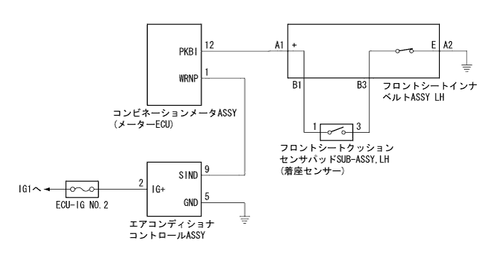
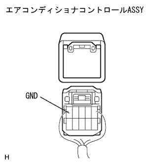
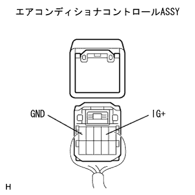
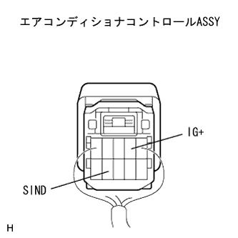
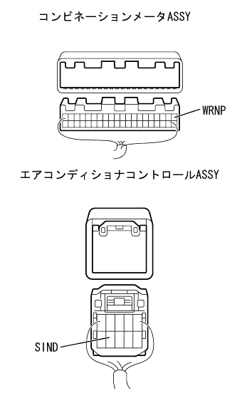
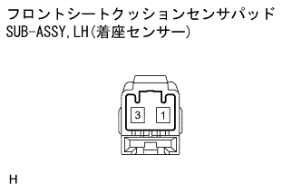
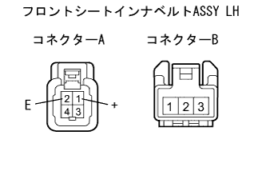

Seat Belt Warning System Front Passenger Side Seat Belt Warning Light Does Not Operate |

| Step 1 | Perform TaSCAN Active Test |
Front Passenger Seat Belt Warning Light Active Test
Using SST (TaSCAN), perform the Active Test to judge whether the system is normal and narrow down the malfunctioning area. (see)
| Item Name | Item Description | Reference Value |
|---|---|---|
| TelltaleNo.2 | Blink (1 Hz)/turn off front passenger seat belt indicator | Front Passenger Seat Belt |
Check the result of the Active Test and proceed to the following destination.
| Result | Proceed to |
|---|---|
| Blinks at 1 Hz or goes off | A |
| Does not blink at 1 Hz or go off | B |
|
| ||||
| A | |
| Step 2 | TaSCAN ECU Data Monitor |
ECU Data Monitor
Using SST (TaSCAN), use the ECU Data Monitor to judge whether the system is normal and narrow down the malfunctioning area. (see)
| Item Name (Symbol) | Item Description/Display Range | Standard Value | Remarks |
|---|---|---|---|
| Front passenger buckle SW (PSBSW) | Occupant sensor status Display range: OFF - ON | ON: Front passenger buckle SW unfastened and seat occupied OFF: Front passenger buckle SW unfastened and seat unoccupied | - |
| Front passenger buckle SW status Display range: ON - OFF | ON: Front passenger seat occupied and front passenger buckle SW unfastened OFF: Front passenger seat occupied and front passenger buckle SW fastened | - |
Check the ECU Data Monitor result and proceed to the following destination.
| Result | Proceed to |
|---|---|
| Both the occupant sensor status and front passenger buckle SW status change OFF/ON | A |
| Occupant sensor status does not change OFF/ON | B |
| Occupant sensor status changes OFF/ON but front passenger buckle SW status does not change OFF/ON | C |
|
| ||||
|
| ||||
| A | ||
| ||
| Step 3 | Inspect Fuse |
Resistance Inspection
Using SST (Toyota electrical tester), measure the resistance of the ECU-IG NO.2 fuse. (see)
| Tester Connection | Condition | Standard |
|---|---|---|
| ECU-IG NO.2 | Always | Below 1 Ω |
|
| ||||
| OK | |
| Step 4 | Inspect Wire Harness and Connector (Air Conditioner Control Assembly Power Source) |
 |
Resistance Inspection
Disconnect the air conditioner control assembly connector.
Using SST (Toyota electrical tester), measure the resistance between the terminals of the vehicle side connector of the air conditioner control assembly.
| Tester Connection (Terminal Symbol) | Condition | Standard |
|---|---|---|
| 5 (GND) - Body ground | Always | Below 1 Ω |
 |
Voltage Inspection
Using SST (Toyota electrical tester), with the vehicle side wire harness connector disconnected, measure the voltage between the terminals from the back side of the connector.
| Tester Connection (Terminal Symbol) | Condition | Standard |
|---|---|---|
| 2(IG+) - 5(GND) | IG ON | 11 to 14 V |
|
| ||||
| OK | |
| Step 5 | Inspect Air Conditioner Control Assembly (Warning Light Operation Signal Circuit) |
 |
Voltage Inspection (Warning Light Operation Signal System)
Connect the air conditioner control assembly connector.
Using SST (Toyota electrical tester), measure the voltage between the terminals.
| Tester Connection (Terminal Symbol) | Condition | Standard |
|---|---|---|
| 2(IG+) - 9(SIND) | IG ON, sitting in front passenger seat, tongue plate not inserted into front passenger inner seat belt → inserted | Alternates between 11 to 14 V and below 1 V → 11 to 14 V |
|
| ||||
| OK | |
| Step 6 | Inspect Wire Harness and Connector (Combination Meter Assembly (Meter ECU) - Air Conditioner Control Assembly) |
Pre-inspection Preparation
 |
Disconnect the combination meter assembly (meter ECU) connector.
Disconnect the air conditioner control assembly connector.
Resistance Inspection
Using SST (Toyota electrical tester), measure the resistance of the wire harness between the combination meter assembly (meter ECU) and air conditioner control assembly.
| Tester Connection (Terminal Symbol) | Condition | Standard |
|---|---|---|
| A-1(WRNP) - 9(SIND) | Always | Below 1 Ω |
| 9 (SIND) - Body ground | Always | 10 kΩ or higher |
|
| ||||
| OK | ||
| ||
| Step 7 | Inspect Front Seat Cushion Sensor Pad Sub-assembly LH (Occupant Sensor) |
 |
Resistance Inspection (Occupant Sensor Section)
Using SST (Toyota electrical tester), measure the resistance between the connector terminals.
| Tester Connection | Condition | Standard |
|---|---|---|
| 1 - 3 | Front passenger seat occupied | Below 100 Ω |
| 1 - 3 | Front passenger seat not occupied | 1 MΩ or higher |
|
| ||||
| OK | |
| Step 8 | Inspect Front Seat Inner Belt Assembly LH |
 |
Resistance Inspection
Using SST (Toyota electrical tester), measure the resistance between the connector terminals.
| Tester Connection (Terminal Symbol) | Condition | Standard |
|---|---|---|
| A-1(+) - B-1 | Always | Below 1 Ω |
Using SST (Toyota electrical tester), measure the resistance between the connector terminals in each buckle state.
| Tester Connection (Terminal Symbol) | Condition | Standard |
|---|---|---|
| B-3 - A-2(E) | Tongue plate not inserted into buckle | Below 1 Ω |
| B-3 - A-2(E) | Tongue plate inserted into buckle | 10 kΩ or higher |
|
| ||||
| OK | ||
| ||